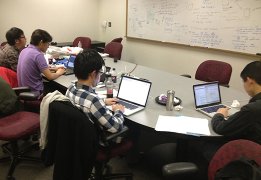
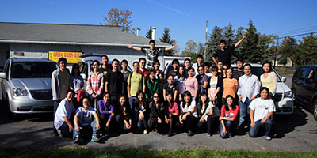
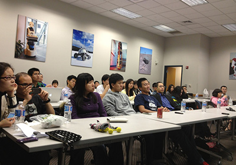

Hongwen Henry Kang from Carnegie Mellon University sees similarities between hackers and entrepreneurs: they both solve problems, take advantage of opportunity, work hard, and they don't ask for permission.

A-PACE HacKnight group working night
Hongwen Henry Kang
Ph.D. Candidate
Robotics Institute
School of Computer Science
Carnegie Mellon University
Being an entrepreneur is in a sense similar to being a hacker.
To me, the most fascinating part of being an entrepreneur is being able to solve some really interesting problems and to create value for a customer. When I was still a kid in a small town in China, computers had started to become popular, but they were still missing many peripheral bits and parts. I used to spend hours soldering together various electronic components to make amplifiers for desktop speakers, audio extensions, etc. That opened up a window of opportunity for me to make a small fortune, before the major manufacturers reached our hometown market. This experience also shaped up my view of entrepreneurship that I like the products that actually create values and make users’ lives easier.

A-PACE group retreat
Like a hacker, entrepreneurs ask for forgiveness after the fact, not permission beforehand. One of my favorite hacks was to datamine Craigslist and extract the names of products that a person owns. Using this information, I cross referenced with Amazon and built a database of 5 million product images, which consisted of almost all the products that you might encounter in your daily life. This, of course, involved a lot of hacks that would not have been approved by either Craigslist or Amazon, if I had asked for permission. By not doing so, I was able to focus on the research problem and I developed one of the first machine learning algorithms that predicts whether a given picture contains a product — by data-mining the rich visual-textual information accompanying the product image data. This work was published at one of the most prestigious conferences in my field [1], and you can explore the database in the site listed below [2]. Right now, I am exploring other novel ways to use the techniques and find a good market fit.

A-PACE entrepreneurship seminar
Work hard to be a lucky hacker. I found another interesting phenomenon through my interaction with other entrepreneurs. Almost all the entrepreneurs that I’ve talked to said that they felt lucky that things just happened to their advantage. I put some thought into this, and I found that it wasn’t pure luck that had led to their successes. Just like Thomas Jefferson once said, “I find that the harder I work, the more luck I seem to have.” It is because they had worked so hard to create all the necessary conditions, rather than everything just happening naturally. To some extent, I feel really lucky in my own entrepreneurial expedition. The reason I started the Association of Pittsburgh Area Chinese Entrepreneurs [3] was simply because I was frustrated to find out that, even though there are a large population of Chinese engineering and computer science students at Carnegie Mellon, there was no means for Chinese entrepreneurs to meet each other. After reading Justin Kan's "Hack Your Culture" [4] and Brad Feld's article on entrepreneurial community [5], I knew I had to start this. It has been a surreal journey. Our membership has grown quickly to over 150 since founding in October 2011. It is really fulfilling to see that many of our group members have started their own startup and even opened some local businesses in the area. This has also broadened my scope of ideas to attack some interesting challenges, which I would have never thought of otherwise.
Like what Steve Jobs had said at the 2005 Stanford commencement, "You can't connect the dots looking forward; you can only connect them looking backwards" [6]. Looking back at the past, I feel so lucky as an entrepreneur and a hacker. Looking forward, I can’t foresee everything, but there’s one thing I am sure of — I'll keep hacking.
Hongwen Henry Kang is a Ph.D. candidate in Computer Science and Robotics at Carnegie Mellon University. His research is in data mining large databases of product images and use them to understand the objects in every picture that a user takes. He is the founder and president of the Association of Pittsburgh Area Chinese Entrepreneurs, a group that aims at connecting and creating synergies among entrepreneurial Chinese students and alumnus. It currently has over 150 members and has reached outside of Pittsburgh to areas as far as Boston, New York, Seattle, the Silicon Valley, and China. He is currently leading an engineering team to apply his Ph.D. research to web image understanding. His contact and research information could be found at www.hwkang.com
[1] Hongwen Kang, Martial Hebert, Alexei A. Efros, Takeo Kanade. "Connecting Missing Links: Object Discovery from Sparse Observations using 5 Million Product Images", In Proceedings of the 12th European Conference on Computer Vision (ECCV). Firenze, Italy, 2012.
[2] http://bit.ly/cmu5million
[3] http://a-pace.org
[4] http://techcrunch.com/2011/10/01/hack-your-culture/
[5] http://www.feld.com/wp/archives/2011/10/entrepreneurial-communities-must-be-led-by-entrepreneurs.html
[6] http://www.youtube.com/watch?v=D1R-jKKp3NA